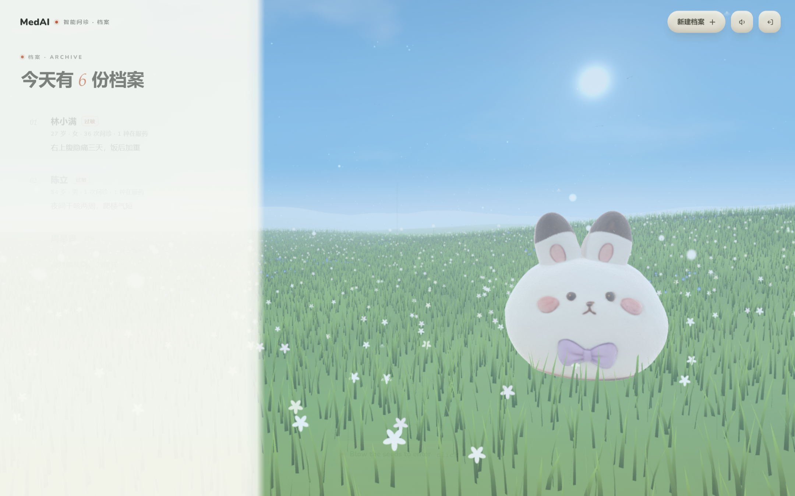
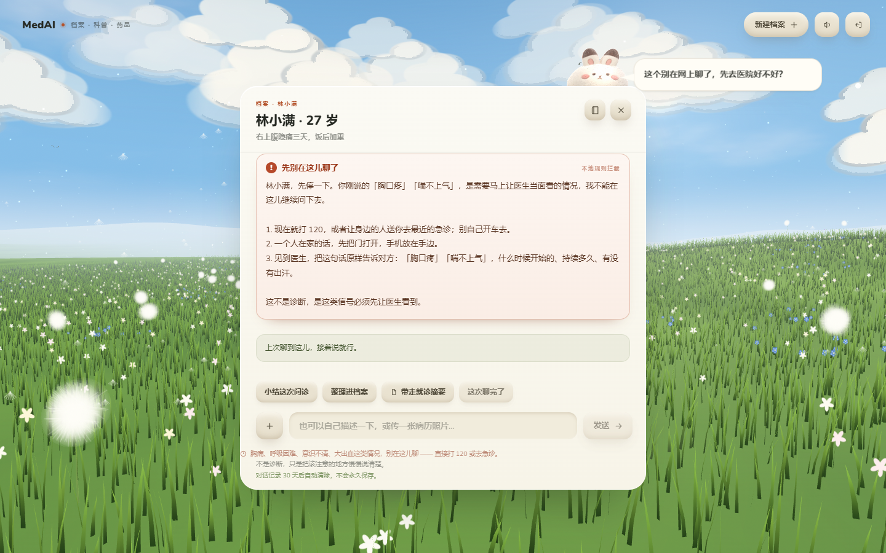
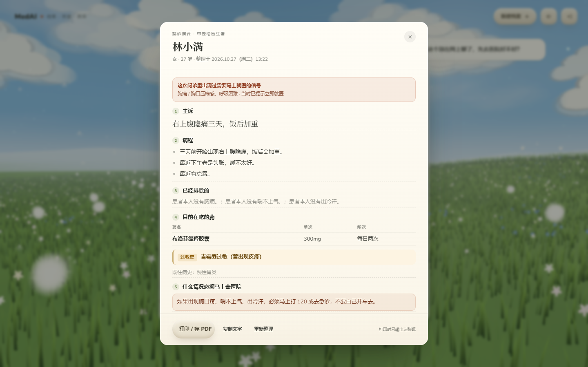
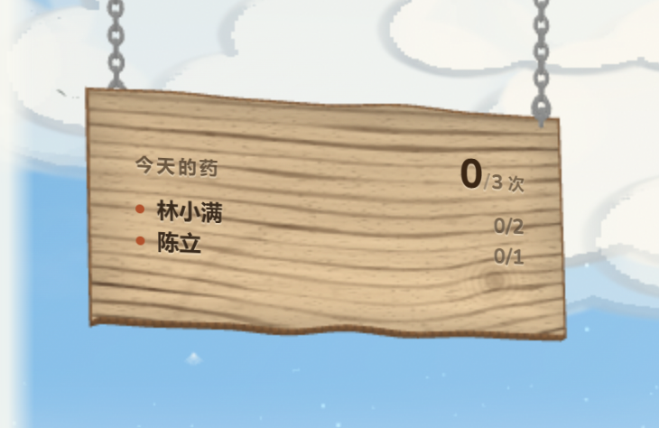
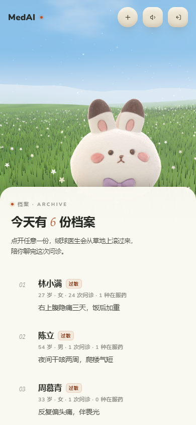

草地上的绒球医生 —— 给每个家庭的一份健康档案
技术文档
| 项目速览 | 内容 |
|---|---|
| 形态 | Web 应用（桌面 / 移动端响应式），可离线私有化部署 |
| 技术栈 | Next.js 16 + React 19 + TypeScript 5.9 + Three.js 0.170 + Prisma 6 + SQLite |
| AI 能力 | DeepSeek 流式问诊 + 个体化提示词装配 + 11 条本地红旗规则 + 事实核对 |
| 内容规模 | 90 条疾病科普 · 73 种药品说明 · 13 个科室 · 18 组自绘 SVG 插图 |
| 代码规模 | 约 2.7 万行（TS / TSX / JS，不含依赖与构建产物）· 23 个 API 路由 |
| 自检覆盖 | 接口 68 项 · 木牌 33 项 · 提醒 20 项 · 登录 18 项 · 入口 8 项，全部通过 |
MedAI 面向"一个家里谁在管药"这件事。它把家庭成员的档案、在服药物、问诊记录、就诊摘要 收在一个账号里，用一片可以点开的 3D 草地作为入口：家里每个人是一块小牌子，点开就能对话； 天上吊着一块木板，写着全家今天吃了几次药，点一下就能打卡。
产品的边界写得很清楚：不做诊断、不开处方、不替用户判断"哪句话重要"。 AI 只承担三件事 —— 把专业术语翻译成人话、把散落的信息整理成可执行的动作、 把一次问诊整理成一张能带去医院的纸。判断权始终在患者手里。

中国有超过 3 亿的慢性病患者，其中相当一部分是老年人；与此同时，"一个家庭里谁在管药"这件事， 通常落在家里那个二三十岁的年轻人身上。他要记得父母各吃什么药、哪天该复诊、孩子发烧到多少度该去医院， 还要在下班后替父母把"医生说的一堆话"翻译成能执行的动作。
这件事的难处不在于信息不够，而在于信息散落在药盒、纸质病历、微信聊天记录和老人的记忆里。 家里老人吃几种药，子女往往说不全；上一次问诊医生说了什么，一周后基本只剩一句"多喝水"。
| 现有形态 | 它做到的 | 它缺的 |
|---|---|---|
| 手机闹钟 / 药盒提醒器 | 到点响，便宜、可靠 | 只知道"该吃药了"，不知道"谁该吃、吃几片、吃没吃"；换个人就全乱 |
| 医院 App / 互联网医院 | 能挂号、能复诊、有电子病历 | 每家医院一套，跨院不通；面向"这一次就诊"，不面向"这一年" |
| 通用 AI 聊天 | 什么都能问，门槛低 | 没有档案就没有个体化；不了解过敏史、在服药物，建议只能停在科普层面 |
| 健康管理类 App | 功能齐全、数据维度多 | 要填的太多，老人用不了；界面像体检报告，看不下去 |
结论是：缺的不是功能，而是一个"全家共用、一个人维护、老人也看得懂"的容器。 这个容器还必须解决一个矛盾 —— 数据要共享（全家人看得到），隐私不能共享（别人一份都看不到）。
| 角色 | 是谁 | 他真正在意的一件事 |
|---|---|---|
| 主要使用者 | 25–45 岁，家里管事的那个子女 | 爸妈今天吃药了没有；孩子夜里发烧要不要去急诊 |
| 被照护者 | 父母（多为慢病）、老人、儿童 | 不想学新东西；只想知道"现在该干什么" |
| 次要使用者 | 异地子女、家庭护工 | 不在身边也能看到今天的情况 |
场景一：早上七点，厨房。手机在灶台边响了一声，兔子在草地上说"该给妈妈吃降压药了"。 用户腾不出手，就把手机架起来点了一下木牌上那一行 —— 打卡完成，板子上的 2/5 变成 3/5。 整个过程两个动作，不用进任何二级页面。
场景二：夜里十一点，孩子发烧。用户打开草地，点孩子的牌子问"39 度，一直哭，要不要去医院"。 系统先做本地红旗判断（有没有抽搐、意识不清、皮疹），再结合档案里的年龄体重和在服药物回答， 最后给出一张可以带走的就诊摘要。
场景三：复诊前一晚。用户点开"病程时间轴"，把这三个月发生的事排成一条轴： 哪天开始吃药、聊过几次、结论卡片写了什么。点"投影视图"，铺成一张白纸，截图或打印， 第二天直接给医生看 —— 不用再凭记忆复述。
三个场景都发生在手机上，而且经常是"一只手、几秒钟、注意力被打断"的状态。 这直接约束了设计：主操作必须在首屏一次点击内完成；文字要大到在油烟和昏暗里也能读； 动画必须能在中低端安卓机上跑得动（见 7.4 性能取舍）。
| 问题 | 现实里的样子 | 我们的做法 |
|---|---|---|
| 吃了没记 | "今天这顿到底吃没吃"—— 老人记不清，子女问不出来，重复服药风险由此产生 | 天上那块木牌：全家今天的用药一屏看完，每一行就是打卡按钮，点一下记为已服、再点撤销， 行内状态与板面文字同时变 |
| 该不该去医院 | 胸痛、呼吸困难、意识不清这类信号，被"再观察观察"耽误；反过来，普通感冒又容易过度就医 | 红旗症状交给本地规则而不是模型：11 条正则命中即中断问诊，画成红卡片并落库， 刷新之后还是红的 |
| 说不清病史 | 复诊三分钟，医生说"上次那个药还吃着吗"，患者答不上来 | 把档案、在服药物、最近 3 次问诊摘要、8 条结论拼成个体化提示词；并把一次问诊整理成 可打印的就诊摘要 |
| 听不懂医嘱 | "窦性心律""幽门螺旋杆菌"—— 名词听懂了，但不知道该做什么检查、什么说法是谣言 | 内置 90 条疾病 + 73 种药品科普，疾病详情里专门有"去医院一般会做哪些检查"和 "流传很广，但不对"两节 |
| 既想共享又怕泄露 | 全家人的健康数据放在一个 App 里，谁都能看，等于没有隐私 | 一个账号多份档案，所有读写都用 ownerId 在一条 SQL 里挡掉越权；
别人的档案和不存在返回同一个 404 |
上面五类问题拆成 6 组功能需求。优先级里 P0 是"不做就等于没做"， P1 是"没有它产品不完整"，P2 是"有更好"。
| 编号 | 功能组 | 优先级 | 具体要求 |
|---|---|---|---|
| FR-1 | 账号与数据隔离 | P0 | 注册 / 登录 / 登出；一个账号管多份家庭档案；跨账号的任何读写都必须返回 404 而非 403 |
| FR-2 | 家庭档案 | P0 | 姓名、关系、生日、身高体重、过敏史、既往史、主诉；可编辑、可删除；支持头像 |
| FR-3 | 用药与打卡 | P0 | 用药计划（药名、剂量、频次、起止日期）；今日待服清单；打卡与撤销；全家用药板一屏呈现 |
| FR-4 | AI 问诊 | P0 | 流式对话；回答必须结合档案与在服药物；高危症状必须被拦截并给出就医指引；不出现诊断与处方 |
| FR-5 | 科普库 | P1 | 疾病与药品检索；疾病含检查项目与常见误区；药品含起效时间、漏服处理、储存条件 |
| FR-6 | 就诊材料 | P1 | 病程时间轴；就诊摘要（可打印、可复制纯文本）；复诊日历 |
| FR-7 | 资料上传 | P2 | 化验单 / 处方照片 / PDF / Word 上传；本地 OCR；文本可作为对话附件上下文 |
| 维度 | 指标 | 怎么落地 |
|---|---|---|
| 响应速度 | 首屏可交互 < 2.5s（4G 中端机）；红旗判断 < 200ms | 3D 模型加载前有程序化占位体；红旗规则纯本地正则，不经网络与模型 |
| 渲染性能 | 移动端稳定 30fps 以上 | 草用实例化渲染（一次 draw call 画 6 万株）；devicePixelRatio 封顶 1.5 |
| 安全 | 密码不可逆、会话可验签、上传不可执行 | scrypt 加盐哈希；HMAC 签名 Cookie；上传只校验文件头魔数，文件名由服务端生成 |
| 隐私 | 健康数据不外泄，对话不长期留存 | 数据隔离在 SQL 层完成；对话原文 30 天清理；密钥只在服务端环境变量 |
| 合规 | 不诊断、不开方、不替代面诊 | 系统提示词硬约束 + 每条科普页固定"科普不替代面诊" + 红旗强制转诊 |
| 可维护 | 换模型 / 换数据库不改业务代码 | AI 收敛在 lib/ai.ts 一层；数据层换 DATABASE_URL 即可切 Postgres |
| 可部署 | 断网环境可独立运行 | 字体、模型、OCR 语言包全部本地化，无第三方 CDN 依赖；47MB 离线包解压即跑 |
整体是"单页壳 + 服务端路由 + 一层 AI 适配"的结构。浏览器侧只有一片草地和一个问诊面板，
状态集中在 MeadowStage.tsx；服务端 23 个 API 路由按
"校验输入 → 认门 → 查配置 → 干活"的固定顺序处理，任何一步不过就直接返回。
/api/auth · /api/patients ·
/api/medications · /api/consultations ·
/api/attachments · /api/notes · /api/growthrequireUser()，所有查询强制带 ownerId
red-flags.ts 11 条）·
提示词装配（medical-prompt.ts）·
事实核对（facts.ts）·
排程与依从性（medication-schedule.ts）·
摘要生成（visit-sheet.ts，纯函数）
lib/ai.ts：OpenAI 兼容协议封装 · 流式与非流式共用一条通路 ·
90 秒首包超时 · 换厂商只改环境变量fetch 模型，这一层是唯一的出口
schema.postgres.prisma 已备好，换库只改连接串
| 层 | 选型 | 为什么是它 |
|---|---|---|
| 框架 | Next.js 16（App Router）+ React 19 + TypeScript 5.9 | 同一仓库里既有服务端取数也有客户端交互；Server Component 让档案数据在服务端就按 ownerId 过滤完，不下发整表 |
| 样式 | Tailwind 4 + 手写 CSS 变量 | 3D 转场、木牌投影这类效果需要精确的时间轴和矩阵，纯原子类反而难写 |
| 3D | Three.js 0.170（自写 engine.js） | 草地是实例化渲染 + 顶点着色器风摆，通用编辑器做不出来也带不动 |
| 数据 | Prisma 6 + SQLite | 单机自用场景零运维；换成 Postgres 只需改 DATABASE_URL |
| 模型 | DeepSeek（OpenAI 兼容协议） | 中文问诊语境好、流式便宜；封装层不绑定厂商，换模型只改环境变量 |
| 认证 | Node 内置 crypto（scrypt）+ HMAC Cookie | 不引认证库，少一个供应链风险；逻辑不到 200 行，可逐行审 |
| OCR | tesseract.js + 本地中文语言包 | 化验单不该上传到第三方识别服务；语言包随仓库走，断网可用 |
| 模块 | 职责 |
|---|---|
lib/auth.ts | scrypt 加盐哈希、HMAC 会话、requireUser() |
lib/medical-prompt.ts | 把档案 / 在服药物 / 摘要 / 结论拼成个体化 System Prompt，带三个 token 上限 |
lib/red-flags.ts | 11 条红旗症状正则，命中即中断，不经过模型 |
lib/facts.ts | diffFacts() 用代码判定冲突，applyFacts() 重新校验后落库 |
lib/visit-sheet.ts | 就诊摘要的结构、清洗、本地模板与纯文本版（纯函数，无副作用） |
lib/medication-schedule.ts | 排程展开与依从性计算，漏服封顶 7 天 |
lib/knowledge-search.ts | 中文检索：归一化 + 多词 AND + 字段权重打分 |
components/meadow/engine.js | 3D 场景：地形、实例草、绒球医生、木牌布局与投影 |
lib/ai.ts | 模型调用的唯一出口 |
| 表 | 关键字段 | 说明 |
|---|---|---|
| User | email · passwordHash | 账号，所有数据的根 |
| Patient | name · gender · birthday · allergy · history · chiefComplaint | 家庭档案，一个账号可多份 |
| Medication | name · dose · frequency · startDate · isActive · reminderAt | 在服药物与提醒时间 |
| CheckIn | medicationId · dateKey · takenAt | 一天一次打卡，(medicationId, dateKey) 唯一，重复打卡幂等 |
| Consultation | status · lastMessageAt · summary | 一次问诊会话，关闭时归档 |
| Message | role · content · flag · attachmentId | 红旗消息把 redflag.<kind> 写进 flag，刷新后仍红 |
| Note | content · starred | 结论卡片，只有患者能建 |
| Attachment | path · mime · size | 化验单 / 处方照片，30 天清理 |
这一层是本作品权重最高的部分，也是做取舍最多的地方。三个选题决定了技术路线： 要不要微调、要不要向量库、要不要 Agent 框架。
微调适合"改变说话风格与任务格式"，不适合"让模型知道某个具体患者的过敏史"。 后者属于事实注入，用提示词就能做到，而且改了立刻生效 —— 患者今早刚加的青霉素过敏，下午的对话就必须带上，微调模型做不到这个时效。 另外微调需要构建数据集并承担训练成本，一个家庭的数据量根本不支持。 所以路线是：通用模型 + 结构化事实装配 + 硬约束提示词。
科普库是 90 条疾病 + 73 种药品的结构化条目，不是长文档。 这类语料的关键是"准确命中条目"，而中文病名的检索难点在别名与错别字 （"胃食管反流"与"烧心"、"甲亢"与"甲状腺功能亢进"），不在语义近似。 我们用"全半角与简繁归一 + 同义词映射 + 多词 AND + 字段权重打分"解决了命中问题： 病名权重高于症状描述，命中病名即置顶。零依赖、可解释、结果稳定, 比引入 embedding 模型和向量库更划算 —— 后者还会带来一个几百 MB 的运行时依赖， 与"离线可部署"这条非功能需求冲突。
问诊是线性对话，不需要多步规划与自主决策。引入 Agent 框架会带来两个风险： 一是模型可能自行决定"再问一轮"或"直接给结论"，行为不可预测； 二是每一轮工具调用都增加延迟与费用，而用户是在深夜着急地问"要不要去医院"。 我们选择把"决策"写成确定性代码（红旗规则、冲突判定、排程）， 只在"组织语言"这一步交给模型 —— 慢的地方必须快，不确定的地方必须确定。
| 环节 | 做法 |
|---|---|
| 调用位置 | 只在服务端。密钥存在 .env 的 DEEPSEEK_API_KEY，浏览器永远拿不到 |
| 协议 | OpenAI 兼容的 /chat/completions，stream: true；服务端转成 SSE 推给前端 |
| 封装 | lib/ai.ts 抽出 postChat()，流式与一次性调用共用；换厂商只改 baseURL 与 model |
| 失败处理 | 先调模型，流读完且内容非空，才把提问和回答一起写库；Key 错、上游 500、网络断都不会攒出"只有提问没有回答"的记录 |
| 降级 | 无 Key 时 MEDAI_DEMO_AI=1 走本地模拟流，协议与真实调用一致，全链路可演练；就诊摘要另有本地模板兜底，绝不空手 |
每次对话前拼四样东西：① 档案（年龄、体型、血型、过敏史、病史、习惯、主诉） ② 在服药物 ③ 最近 3 条问诊摘要 ④ 星标优先的 8 条结论。 这四块各自有 token 上限，总量恒定，不会随对话变长而失控； 超出上限时按"过敏史 > 主诉 > 在服药物 > 摘要 > 结论"的顺序裁剪，把最后的位置留给最重要的信息。
医疗合规三件套永远在场：不下诊断、不开处方；过敏史优先考虑并主动提醒； 涉及处方药必须提示遵医嘱。这三条写在系统提示词最前面，并且不参与裁剪。
| 优化点 | 做法 | 效果 |
|---|---|---|
| 规则前置，先拦后问 | 红旗症状在调模型之前用本地正则判定 | 拦截耗时 126ms，走模型 1646ms；省一次调用，且模型挂了这条生命线照样生效 |
| 首包超时而非全程超时 | 只给"建连 + 首包"设 90 秒上限，拿到响应头就撤计时器 | 话多的正常回答不会被从中间掐断；网络卡死时又不会无限等 |
| 流式渲染 | SSE 逐块推，前端边收边画 | 首字出现时间从数秒降到 1 秒内，长回答的体感差异明显 |
| 本地能力不上云 | 红旗判定、排程计算、科普检索、OCR 全在本地 | 这三类调用量最大，本地化后不产生费用，也不受上游可用性影响 |
| 事实核对人工闭环 | 模型只返回候选事实，一个字不写库；冲突项默认不勾选并红色高亮 | 避免模型"顺着用户说"污染档案，同时把确认成本降到一次点击 |
11 条规则覆盖胸痛、言语不清、抽搐、意识改变、大出血、呼吸困难、高热伴皮疹等急症表述。
命中即中断常规回答，改为固定话术要求立即就医或拨打 120。命中结果写进消息的
flag 字段（redflag.<kind>），刷新之后仍然是红的 ——
安全提示不能被一次页面刷新冲掉。

模型只能返回候选事实（可补字段 / 新增用药 / 与档案冲突）。
其中 fill 与 add 默认勾选，conflict 默认不勾选并红色高亮，
必须患者亲手确认。冲突判定由代码完成，不交给模型 —— 让模型判断"新信息与档案是否矛盾"，
它容易顺着用户说。落库前每条都当不可信输入重新校验：字段白名单、长度上限、
单次 ≤ 20 条、medicationId 按 ownerId 重查。
| 一层 | 内容 |
|---|---|
| 草地（首页） | 家人档案栏 · 今日用药木牌 · 绒球医生 · 疾病科普 / 药品说明两个入口 |
| 档案详情 | 基本信息 · 在服药物 · 结论卡片 · 问诊记录（日历） · 病程时间轴 · 成长记录 |
| 问诊面板 | 流式对话 · 附件（图片/PDF/Word） · 事实核对 · 就诊摘要 |
| 科普库 | 疾病 90 条（13 科室）· 药品 73 种（10 大类）· 症状搜索 |
医疗类产品的默认语言是"白底 + 蓝 + 表格"，它传达的是准确，但也传达距离感。
MedAI 选择的是另一种可信：一片有风的草地、一只毛绒绒的绒球医生、一块手写的木板。
颜色取自清晨的草地（#8abfeb 的天空、#2f4a2b 的深绿、奶油色的纸面板），
圆角与黏土质感的按钮（.clay）替代了直角卡片。
目的很实际：让人愿意在深夜打开它。
首次进入是一株 186 颗种子的蒲公英（内联 SVG，无图片请求）。吹散之后 3D 草地才显出来 ——
这不是装饰，是用 1.2 秒把"这是一片能玩的地方"这件事说清楚。看过一次后写入
sessionStorage，返回时在 HTML 解析阶段就打上标记，第一帧直接隐藏，不会闪回开场。
点一份档案，球向右滚 90°、抬头、缩小，左栏左滑消失，问诊面板从右滑到中间 ——
三者共用一条 --flow: 1100ms 的时间轴，同一刻停下，球正好趴在面板上边缘。
球的落点不是写死的坐标，而是把面板的 offsetLeft/offsetTop 反投影回 3D 世界算出来的，
换分辨率、换布局都准。转场进度用墙钟计算而不是累加 dt：低帧率设备上
dt 会被钳到 0.05，那样 1.1 秒会被拖成两三秒，球就和面板错开了。
木牌最初只是"看"的 —— 看全家今天吃到哪了。但看和记之间隔着一个二级页面， 而真实场景里用户根本没空跳转。所以现在卡片里每一行药就是按钮： 点一下调打卡接口，成功后重新拉取整块板子，行内状态、表头计数（2/5 → 3/5）、 3D 板面上的字三处同时更新。
这里有个细节值得一提：打卡后同一个人的名字可能因为排序变化而移动，用户会点错行。 所以卡片打开时会把人名顺序冻结下来，打卡只改状态、不重排。
问诊结束后可以整理成一张 A4 纸：主诉 / 病程 / 在服药与过敏史 / 现在可以先做的 / 何时必须就医 / 想问医生什么。它单独重排了字号和版式（不依赖 flex、色块用真边框）， 用任何工具转 PDF 都不容易变形；同时提供纯文本版，复制到微信里也不会丢掉过敏史。

项目按"能用 → 好用 → 敢交"三段推进，每一轮都以"自检脚本全绿 + 真实截图"收尾。 代码按模块分 18 次提交入库，提交信息记录每次改了什么、为什么改。
| 阶段 | 做了什么 | 为什么这一步重要 |
|---|---|---|
| 第 1 周 | 账号体系、档案增删改查、问诊流式对话、AI 提示词装配 | 先把"能不能用"跑通，此时界面还很朴素 |
| 第 2 周 | 3D 草地（实例化草、风摆、绒球医生）、蒲公英开场、点档案的转场 | 产品第一次有了"愿意打开"的理由 |
| 第 3 周 | 红旗症状本地规则、事实核对、就诊摘要、问诊日历 | 把 AI 从"聊天"变成"有边界的工具" |
| 第 4 周 | 用药提醒、木牌、病程时间轴、疾病/药品科普库 | 覆盖"吃、看、说"三个真实动作 |
| 第 5 周 | 木牌上直接打卡、404/错误页、演示入口、打包与离线部署 | 从"能演示"走到"能交付" |
最初转场进度是把每帧 dt 累加。但引擎里 dt 被钳到 0.05，
30fps 的机器上 1.1 秒的动画会被拖成两三秒，球和面板就错开了。
改成用墙钟计算进度后，无论多少帧，三者都在同一刻停。
木牌的横向位置取自左栏 .records 的右边界，纵向靠相机反投影。
resize 那一帧里，左栏还是手机版宽度、相机还在插值 —— 两个输入都是旧的，板子就摆错了地方。
修法是在 resize 后记一个 1.4 秒的重排倒计时，逐帧重摆，等 CSS 和相机都落定。
这条后来写成了回归断言（切回桌面木牌必须回到原位，误差 < 24px）。
.next/node_modules
分发包解压后 next start 报 Cannot find module。
原因是排除规则里的 node_modules 把 .next/node_modules 整棵剪掉了 ——
那是 Turbopack 给 serverExternalPackages 留的入口（一堆符号链接）。
改法：只剪项目根下的 node_modules，并让遍历跟随符号链接。
这个坑只在"真的解压、真的启动"时才暴露，也是后来坚持做解压验收的原因。
四条，共同点是把"该确定的"从模型手里拿回来，只在模型擅长的地方用它。
| 创新点 | 通行做法 | 我们的做法 |
|---|---|---|
| T1 红旗症状不走模型 | 把"是否紧急"也交给大模型判断，靠提示词约束 | 11 条本地正则规则先判，命中即中断问诊并落库。实测拦截 126ms，走模型 1646ms； 模型挂了也不影响这条生命线 |
| T2 冲突判定用代码，不用模型 | 让模型自己判断"新信息和档案是否矛盾"，容易顺着用户说 | diffFacts() 做字段级比对，冲突项默认不勾选、必须人工确认；模型只负责抽取 |
| T3 3D 木牌上贴真字体 | 把文字烘成贴图，缩放就糊；或者干脆用一块 HTML 浮层假装 | 板面文字是 HTML，每帧用单应矩阵贴到板子四角 —— 真字体、任意缩放不糊， 还能被子遮挡、跟着板子摆 |
| T4 提醒有两条通道 | 只依赖系统通知，用户一拒权限功能就废了 | 先让兔子在草地上说一句、蹦一下，有权限再补一条系统通知；人不在页面上时那句话会存着，回来补上 |
三条，共同点是把一个动作的完成成本压到最低，而不是增加功能数量。
| 创新点 | 通行做法 | 我们的做法 |
|---|---|---|
| A1 打卡压缩到"一行一次点击" | 提醒 → 跳详情页 → 找到那颗药 → 点"已服用" | 木牌卡片里每行就是按钮，不进二级页面；打卡后行、表头、3D 板面三处同步。 厨房里一只手也能完成 |
| A2 把问诊变成一张能带走的纸 | 聊完就结束，复诊时患者凭记忆复述 | 就诊摘要按 A4 重排版式，可直接打印或复制纯文本；病程时间轴还能铺成投影视图给医生看 |
| A3 一个账号管全家，且互不可见 | 要么一人一号（老人不会注册），要么全部可见（没有隐私） | 一个账号多份档案，越权在 SQL 层挡掉；别人的档案与不存在的档案返回同一个 404， 连"这个 id 存不存在"都问不出来 |
大部分健康类作品的重心在"功能数量"，MedAI 的重心在"一个动作的完成度"： 打卡是两个动作、问诊是一次点击、复诊材料是一张能打印的纸。 另一条差异是边界感：不诊断、不开方、不替用户判断"哪句重要"， 把 AI 放在"整理和翻译"的位置上 —— 这既是合规要求，也是这类产品能长期被信任的前提。

项目没有引入测试框架，但有一套可重复执行的自检脚本，覆盖接口、规则、渲染与交互， 每次改动后跑一遍，输出通过 / 失败计数。当前状态：
| 脚本 | 项数 | 覆盖什么 |
|---|---|---|
scripts/api-test.ts | 68 | 注册登录、越权、档案 CRUD、用药、问诊、事实核对、附件 |
scripts/check-board.mjs | 33 | 木牌位置、卡片明细、打卡与撤销、三处同步、resize 回归、移动端 |
scripts/check-reminder.mjs | 20 | 提醒时间计算、免打扰、漏服封顶、文案 |
scripts/check-login.mjs | 18 | 登录只有邮箱一条路、Cookie、越权拒绝 |
scripts/check-entry.mjs | 8 | 中文 404、错误页出口、演示入口一步进入 |
scripts/knowledge-test.ts | — | 90 条疾病 + 73 种药品的字段完整性与搜索命中（同义词归一） |
tsc --noEmit / eslint . | 0 错误 | 类型与规范 |
交付前不看清单看行为：解压到独立目录 → npm ci → prisma generate →
db push → 起服务 → 跑一遍登录、建档、加药、打卡、科普库。
只有这一遍走通了才算"能交付"。
findFirst({ where: { id, ownerId } })），
不做"先查再比对"，避免从响应差异确认某个 id 是否存在。randomUUID 生成，不采信用户文件名。| 方式 | 适用场景 | 步骤 |
|---|---|---|
| 本机直跑 | 演示、答辩现场（无需外网） | npm ci → prisma generate → prisma db push → npm start；
Windows 双击 Start MedAI.bat 即可，首次运行会自动补齐这四步 |
| Docker | 交付给机构、社区医院 | docker compose up -d；多阶段构建，产物只留 standalone 所需文件 |
| Caddy 反代 | 公网在线演示（可选加分项） | Caddy 负责 HTTPS 与反代，容器内只监听内网端口，证书自动申请 |
| 离线包 | 网络受限环境 | 47MB 离线包（含 .next 与 prisma client）解压即跑，无第三方 CDN 依赖 |
数据备份用 npm run db:backup：WAL 模式下直接 cp 会漏掉还在
-wal 里的数据，所以改用 VACUUM INTO 导出一致性快照，导出后重开校验表存在。
五周时间，做了三件事：一个能管全家的档案容器、一个有边界的 AI 问诊、 一个愿意被打开的外壳。前两件是功能，第三件是这类产品能不能被用起来的前提 —— 一个需要教三遍才会用的健康 App，老人第二天就不会再点开。
技术上最值得记的不是用了什么框架，而是几条约束： 安全判断不交给模型、冲突判定不交给模型、结论生成不交给模型。 这三条让产品的行为可预测、可解释、可审计，代价是少了几个"看起来很 AI"的功能。
| 阶段 | 对象 | 怎么用 |
|---|---|---|
| 一、家庭自用 | 有慢病老人的家庭、有小孩的家庭 | 一个账号管全家，免费；核心价值是"今天吃药了没有"和"这次要不要去医院" |
| 二、社区 / 家医签约 | 社区卫生服务中心、家庭医生团队 | 就诊摘要可以直接作为签约居民的随访材料；医生不用再问一遍用药史 |
| 三、机构合作 | 药企患者服务、慢病管理公司、养老机构 | 私有化部署（Docker + SQLite/Postgres），数据不出机构 |
技术上，模型层已经解耦（换厂商只改环境变量），数据层一条 DATABASE_URL 就能切 Postgres，
部署有三条路线（本机 / Docker / Caddy 反代）。
成本上，单用户每次问诊的模型开销是可控的（历史 20 条 + 摘要 3 条 + 结论 8 条的固定上限），
红旗判断、排程、科普检索全部在本地完成，不产生调用费用。
更重要的是它足够小：不依赖任何第三方健康数据接口，一个 47MB 的离线包解开就能跑。 这意味着它可以被送进网络条件一般的社区医院，而不是只能活在演示视频里。

| 名称 | 许可 / 性质 | 用途 |
|---|---|---|
| Next.js / React | MIT | 应用框架与渲染 |
| Three.js | MIT | 3D 场景渲染 |
| Prisma | Apache-2.0 | ORM 与迁移 |
| Tailwind CSS | MIT | 样式工具 |
| tesseract.js | Apache-2.0 | 化验单 / 处方照片的本地 OCR |
| Nunito | SIL Open Font License | 界面西文字体 |
| DeepSeek API | 商业服务 | 问诊对话与摘要生成 |
| 绒球医生模型 | 团队自制 / 待补充授权说明 | public/models/rabbit.glb，加载失败时回退到程序化占位模型 |
科普内容（90 条疾病、73 种药品）由团队依据公开诊疗指南与药品说明书整理， 每条标注来源与整理月份，正文不含任何处方建议，页面底部固定一句"科普不替代面诊"。 界面中的插图（18 组科室线稿）为团队自绘 SVG，不含第三方图片素材。
| 项目 | 说明 |
|---|---|
| 运行环境 | Node.js ≥ 20；Windows 双击 Start MedAI.bat，
或 npm ci && npx prisma generate && npx prisma db push && npm start |
| 默认端口 | 生产 3100（npm start -- -p 3100）；开发 3200 |
| 演示账号 | demo@medai.local / Medai@2026
（含 6 份家庭成员档案、在服药物与问诊记录） |
| 无 Key 演示 | .env 里 MEDAI_DEMO_AI=1 时走本地模拟流，协议与真实调用一致 |
| 一键体验 | MEDAI_DEMO_LOGIN=1 时登录页出现"用演示账号直接进去" |
| 环境变量 | 见仓库根目录 .env.example，含数据库、会话密钥、模型、保留天数全部配置项 |
源码规模：约 2.7 万行（TypeScript / TSX / JS，不含依赖与构建产物）；23 个 API 路由；90 + 73 条科普内容。